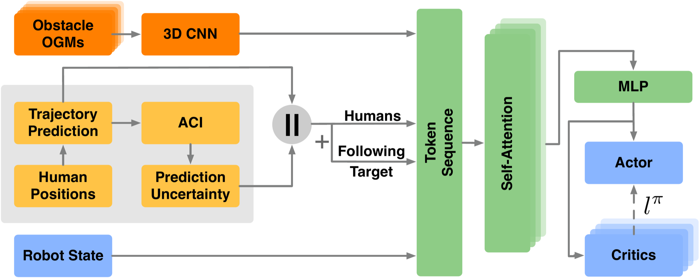
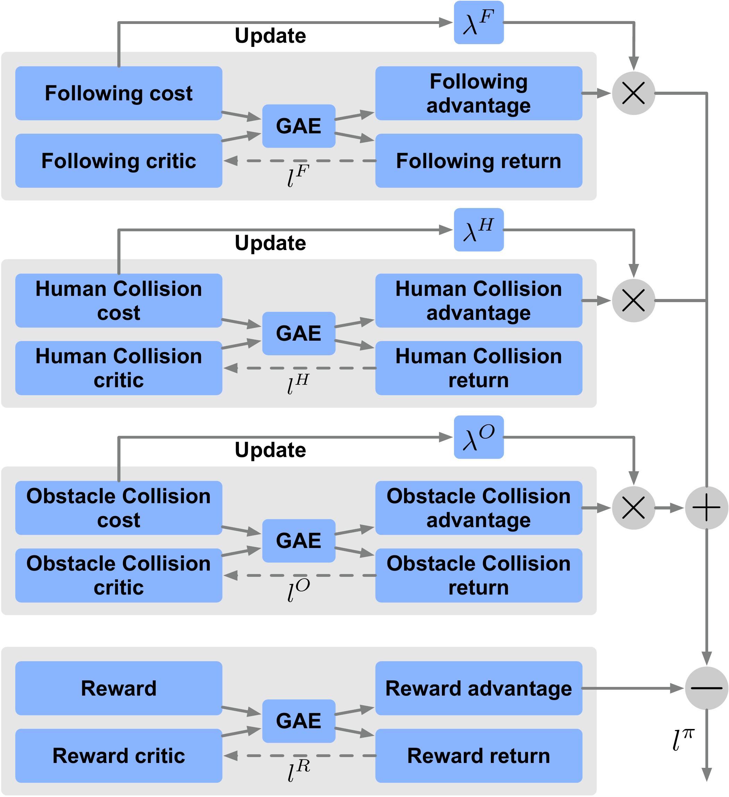
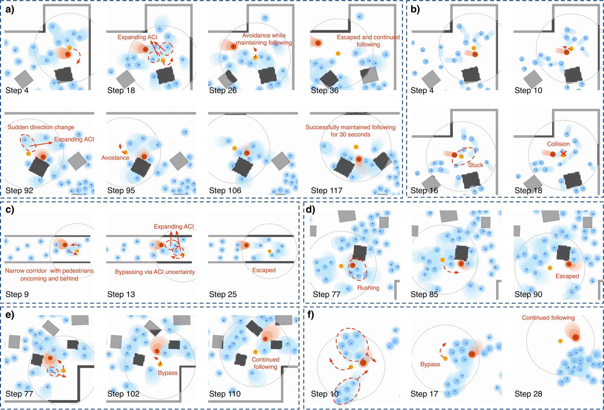

Navigating the Proximity-Safety Balance:Constraint Decomposition for Human Following in Pedestrian Crowds
- Shiting Gong1,*
- Jianpeng Yao2,*
- Jinfeng Wang2
- Marco Pavone3
- Jiachen Li4,†
1University of Pennsylvania 2University of California, Riverside 3Stanford University 4Georgia Institute of Technology
* Equal contribution † Corresponding author

A multi-constraint reinforcement learning framework that decomposes human following into independently tunable cost constraints, explicitly balancing proximity to the target against safety among dense and unpredictable pedestrian crowds.
Abstract
Following a target human in crowded environments involves an inherent conflict between staying close to the target and navigating safely among surrounding pedestrians and obstacles. This conflict becomes more severe in dense scenarios, where aggressive following risks collisions and conservative margins lead to target loss, especially when pedestrian behaviors are unfamiliar or unpredictable. Existing reinforcement learning (RL) methods typically encode these competing objectives into a single dense reward, but the resulting proximity-safety balance is implicit and difficult to adjust across conditions. To address this, we decompose the human-following task into a sparse task reward and independent cost constraints within a multi-constraint RL formulation, where each constraint is managed through cost thresholds with direct behavioral meaning rather than implicit reward weight ratios, allowing explicit and tunable control over the trade-off. We further quantify the prediction uncertainty of human motions and integrate these estimates into the RL costs to enhance safety under unpredictable conditions. Extensive experiments across both in-distribution and out-of-distribution settings demonstrate that our method achieves an effective proximity-safety balance compared to baselines. Real-robot deployment further validates the feasibility of our method in real-world scenarios. Real robot demonstrations are provided in the supplementary video.
Key Ideas and Contributions


1) Constraint Decomposition for Explicit Trade-off Control: We propose a framework that decomposes human-following objectives into a sparse task reward and independent cost constraints, with the trade-off managed through behaviorally meaningful cost thresholds and jointly optimized using PPO-Lagrangian.
2) Uncertainty-Aware Safe Following: We integrate prediction uncertainty of human motions into the observation space and cost formulation, and design a unified policy network with spatial constraint reasoning to enable safe human following under uncertain and dynamic pedestrian environments.
3) Comprehensive Evaluation and Real-World Deployment: We extend CrowdNav with static obstacles and conduct extensive evaluations with varying crowd densities, pedestrian behaviors, and environment layouts, and deploy on a real robot under the ROS 2 setup to validate real-world effectiveness.
Quantitative Results
| Method | SR ↑ | CR ↓ | TLR ↓ | AFD | ||
|---|---|---|---|---|---|---|
| Overall | Human | Obstacle | ||||
| SG-HA* | 1.84% | 81.52% | 79.92% | 1.60% | 16.64% | 1.91 |
| SG-ORCA | 17.68% | 64.88% | 27.84% | 37.04% | 17.44% | 1.65 |
| SG-MPC | 30.96% | 42.72% | 30.08% | 12.64% | 26.32% | 2.64 |
| OGM-HEIGHT | 52.32% | 34.72% | 21.44% | 13.28% | 12.96% | 2.19 |
| RL | 68.00% | 24.08% | 15.76% | 8.32% | 7.92% | 2.24 |
| RL+ACI | 71.60% | 20.72% | 12.80% | 7.92% | 7.68% | 2.28 |
| Ours | 78.08% | 16.16% | 10.72% | 5.44% | 5.76% | 2.35 |
| Intent | Method | SR ↑ | CR ↓ | TLR ↓ | AFD | |
|---|---|---|---|---|---|---|
| Overall | Human | |||||
| Safety | Ours (δF=4.0, δH=3.2) | 71.68% | 18.24% | 8.80% | 10.08% | 2.54 |
| RL+ACI (wH×2) | 71.60% | 20.72% | 12.80% | 7.68% | 2.28 | |
| Following | Ours (δF=3.2, δH=4.0) | 74.40% | 22.40% | 14.24% | 3.20% | 2.23 |
| RL+ACI (wF×2) | 63.92% | 27.36% | 15.44% | 8.72% | 2.26 | |
| Balanced | Ours (δF=3.6, δH=3.6) | 78.08% | 16.16% | 10.72% | 5.76% | 2.35 |
| RL+ACI (wF=wH=1) | 70.80% | 21.12% | 12.88% | 8.08% | 2.26 | |
| Environment | Method | SR ↑ | CR ↓ | TLR ↓ | AFD | ||
|---|---|---|---|---|---|---|---|
| Overall | Human | Obstacle | |||||
| Corridor | SG-HA* | 2.64% | 88.64% | 88.56% | 0.08% | 8.72% | 1.46 |
| SG-ORCA | 50.64% | 47.20% | 25.28% | 21.92% | 2.16% | 1.48 | |
| SG-MPC | 48.88% | 39.20% | 37.04% | 2.16% | 11.92% | 1.84 | |
| OGM-HEIGHT | 56.24% | 37.60% | 28.96% | 8.64% | 6.16% | 1.50 | |
| RL | 77.52% | 21.84% | 21.04% | 0.80% | 0.64% | 1.50 | |
| RL+ACI | 82.96% | 16.72% | 15.12% | 1.60% | 0.32% | 1.53 | |
| Ours | 89.76% | 8.64% | 8.48% | 0.16% | 1.60% | 1.78 | |
| 15% Rushing Humans | SG-HA* | 0.16% | 93.68% | 92.72% | 0.96% | 6.16% | 1.93 |
| SG-ORCA | 12.48% | 81.76% | 37.28% | 44.48% | 5.76% | 1.39 | |
| SG-MPC | 15.76% | 72.48% | 57.84% | 14.64% | 11.76% | 2.66 | |
| OGM-HEIGHT | 47.04% | 38.08% | 26.56% | 11.52% | 14.88% | 2.22 | |
| RL | 61.60% | 35.36% | 27.36% | 8.00% | 3.04% | 2.15 | |
| RL+ACI | 68.48% | 28.48% | 23.04% | 5.44% | 3.04% | 2.18 | |
| Ours | 70.56% | 22.72% | 19.36% | 3.36% | 6.72% | 2.23 | |
| SF Pedestrian Model | SG-HA* | 0.72% | 84.88% | 84.08% | 0.80% | 14.40% | 1.74 |
| SG-ORCA | 22.24% | 68.80% | 14.40% | 54.40% | 8.96% | 1.53 | |
| SG-MPC | 29.60% | 45.92% | 31.20% | 14.72% | 24.48% | 2.43 | |
| OGM-HEIGHT | 35.84% | 50.40% | 22.88% | 27.52% | 13.76% | 2.16 | |
| RL | 56.96% | 40.96% | 21.28% | 19.68% | 2.08% | 2.15 | |
| RL+ACI | 60.64% | 34.48% | 21.68% | 12.80% | 4.88% | 2.19 | |
| Ours | 64.32% | 33.68% | 20.08% | 13.60% | 2.00% | 2.21 | |
| Groups | SG-HA* | 0.08% | 92.64% | 92.64% | 0.00% | 7.28% | 1.83 |
| SG-ORCA | 27.68% | 46.48% | 46.48% | 0.00% | 25.84% | 1.86 | |
| SG-MPC | 26.88% | 64.08% | 64.08% | 0.00% | 9.04% | 2.43 | |
| OGM-HEIGHT | 36.32% | 53.28% | 53.28% | 0.00% | 10.40% | 2.09 | |
| RL | 49.36% | 46.64% | 46.64% | 0.00% | 4.00% | 1.87 | |
| RL+ACI | 56.00% | 39.20% | 39.20% | 0.00% | 4.80% | 2.17 | |
| Ours | 59.68% | 32.64% | 32.64% | 0.00% | 7.68% | 2.14 | |
SR: success rate; CR: collision rate (overall / with humans / with obstacles); TLR: target-lost rate; AFD: average following distance. Best in each column is in bold.
Qualitative Results
